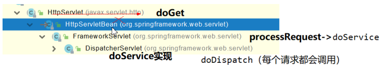
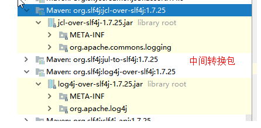

SpringBoot
第1章 系统总览
第2章 自动化装配
自动化配置
@SpringBootApplication
public class SbApplication {
public static void main(String[] args) {
ConfigurableApplicationContext applicationContext = springApplication.run(args);
//查看容器里的组件
String[] beanDefinitionNames = applicationContext.getBeanDefinitionNames();
for (String beanDefinitionName : beanDefinitionNames) {
System.out.println("beanDefinitionName = " + beanDefinitionName);
}
}
}
自动配置特性
- 自动配好Tomcat
- 引入Tomcat依赖。
- 配置Tomcat
<dependency>
<groupId>org.springframework.boot</groupId>
<artifactId>spring-boot-starter-tomcat</artifactId>
<version>2.3.4.RELEASE</version>
<scope>compile</scope>
</dependency>
- 自动配好SpringMVC
- 引入SpringMVC全套组件
- 自动配好SpringMVC常用组件（功能）
- 自动配好Web常见功能，如：字符编码问题
- SpringBoot帮我们配置好了所有web开发的常见场景
public static void main(String[] args) {
//1、返回我们IOC容器
ConfigurableApplicationContext run = SpringApplication.run(MainApplication.class, args);
//2、查看容器里面的组件
String[] names = run.getBeanDefinitionNames();
for (String name : names) {
System.out.println(name);
}
}
- 默认的包结构
- 主程序所在包及其下面的所有子包里面的组件都会被默认扫描进来
- 无需以前的包扫描配置
- 想要改变扫描路径
- @SpringBootApplication(scanBasePackages=“com.lun”)
- @ComponentScan 指定扫描路径
@SpringBootApplication
等同于
@SpringBootConfiguration
@EnableAutoConfiguration
@ComponentScan("com.lun")
- 各种配置拥有默认值
- 默认配置最终都是映射到某个类上，如：MultipartProperties
- 配置文件的值最终会绑定每个类上(使用的是@ConfigurationProperties 注解)，这个类会在容器中创建对象
- 按需加载所有自动配置项
- 非常多的starter
- 引入了哪些场景这个场景的自动配置才会开启（比如web场景 引入依赖 spring-boot-starter-web）
<dependency>
<groupId>org.springframework.boot</groupId>
<artifactId>spring-boot-starter-web</artifactId>
</dependency>
- SpringBoot所有的自动配置功能都在 spring-boot-autoconfigure 包里面
自动配置【源码分析】-自动包规则原理
spring-boot-autoconfigure 包提供给了我们全场景的自动配置。
- 利用getAutoConfigurationEntry(annotationMetadata);给容器中批量导入一些组件
- 调用List
configurations = getCandidateConfigurations(annotationMetadata, attributes)获取到所有需要导入到容器中的配置类 - 利用工厂加载 Map
- 从META-INF/spring.factories位置来加载一个文件。
- 默认扫描我们当前系统里面所有META-INF/spring.factories位置的文件
- spring-boot-autoconfigure-2.3.4.RELEASE.jar包里面也有META-INF/spring.factories

# 文件里面写死了spring-boot一启动就要给容器中加载的所有配置类
# spring-boot-autoconfigure-2.3.4.RELEASE.jar/META-INF/spring.factories
# Auto Configure
org.springframework.boot.autoconfigure.EnableAutoConfiguration=\
org.springframework.boot.autoconfigure.admin.SpringApplicationAdminJmxAutoConfiguration,\
org.springframework.boot.autoconfigure.aop.AopAutoConfiguration,\
...
虽然我们127个场景的所有自动配置启动的时候默认全部加载，但是xxxxAutoConfiguration按照条件装配规则（@Conditional），最终会按需配置。
如AopAutoConfiguration类：
@ConditionalOnClass({Advice.class}):就是只有你导入了Advice这个类，AOP才生效
@ConditionalOnBean // 当给定的在bean存在时,则实例化当前Bean
@ConditionalOnMissingBean // 当给定的在bean不存在时,则实例化当前Bean
@ConditionalOnClass // 当给定的类名在类路径上存在，则实例化当前Bean
@ConditionalOnMissingClass // 当给定的类名在类路径上不存在，则实例化当前Bean
//
// Source code recreated from a .class file by IntelliJ IDEA
// (powered by Fernflower decompiler)
//
package org.springframework.boot.autoconfigure.aop;
import org.aspectj.weaver.Advice;
import org.springframework.aop.config.AopConfigUtils;
import org.springframework.beans.factory.config.BeanFactoryPostProcessor;
import org.springframework.beans.factory.support.BeanDefinitionRegistry;
import org.springframework.boot.autoconfigure.condition.ConditionalOnClass;
import org.springframework.boot.autoconfigure.condition.ConditionalOnMissingClass;
import org.springframework.boot.autoconfigure.condition.ConditionalOnProperty;
import org.springframework.context.annotation.Bean;
import org.springframework.context.annotation.Configuration;
import org.springframework.context.annotation.EnableAspectJAutoProxy;
@Configuration(
proxyBeanMethods = false
)
//解读：配置文件中是否有：spring.aop.auto=true ,matchIfMissing表示默认就是true
@ConditionalOnProperty(
prefix = "spring.aop",
name = {"auto"},
havingValue = "true",
matchIfMissing = true
)
public class AopAutoConfiguration {
public AopAutoConfiguration() {
}
//这个会生效
@Configuration(
proxyBeanMethods = false
)
//没有这个包org.aspectj.weaver.Advice会生效，因为我们有两种AOP的实现，一种是jdk需要实现接口，一种是aspectj。
@ConditionalOnMissingClass({"org.aspectj.weaver.Advice"})
@ConditionalOnProperty(
prefix = "spring.aop",
name = {"proxy-target-class"},
havingValue = "true",
matchIfMissing = true
)
static class ClassProxyingConfiguration {
ClassProxyingConfiguration() {
}
@Bean
static BeanFactoryPostProcessor forceAutoProxyCreatorToUseClassProxying() {
return (beanFactory) -> {
if (beanFactory instanceof BeanDefinitionRegistry) {
BeanDefinitionRegistry registry = (BeanDefinitionRegistry)beanFactory;
AopConfigUtils.registerAutoProxyCreatorIfNecessary(registry);
AopConfigUtils.forceAutoProxyCreatorToUseClassProxying(registry);
}
};
}
}
//这个不会生效
@Configuration(
proxyBeanMethods = false
)
@ConditionalOnClass({Advice.class})
static class AspectJAutoProxyingConfiguration {
AspectJAutoProxyingConfiguration() {
}
@Configuration(
proxyBeanMethods = false
)
@EnableAspectJAutoProxy(
proxyTargetClass = true
)
@ConditionalOnProperty(
prefix = "spring.aop",
name = {"proxy-target-class"},
havingValue = "true",
matchIfMissing = true
)
static class CglibAutoProxyConfiguration {
CglibAutoProxyConfiguration() {
}
}
@Configuration(
proxyBeanMethods = false
)
@EnableAspectJAutoProxy(
proxyTargetClass = false
)
@ConditionalOnProperty(
prefix = "spring.aop",
name = {"proxy-target-class"},
havingValue = "false"
)
static class JdkDynamicAutoProxyConfiguration {
JdkDynamicAutoProxyConfiguration() {
}
}
}
}
@EnableAutoConfiguration
@AutoConfigurationPackage
@Import({AutoConfigurationImportSelector.class})
public @interface EnableAutoConfiguration {
String ENABLED_OVERRIDE_PROPERTY = "spring.boot.enableautoconfiguration";
Class<?>[] exclude() default {};
String[] excludeName() default {};
}
@AutoConfigurationPackage
@Import({Registrar.class}) //给容器中导入一个组件
public @interface AutoConfigurationPackage {
String[] basePackages() default {};
Class<?>[] basePackageClasses() default {};
}
利用Register给容器中导入一系列的组件
static class Registrar implements ImportBeanDefinitionRegistrar, DeterminableImports {
Registrar() {
}
//AnnotationMetadata 获取main方法类中的注解信息
public void registerBeanDefinitions(AnnotationMetadata metadata, BeanDefinitionRegistry registry) {
//getPackageNames() ：将基础包获取到封装到数组中
AutoConfigurationPackages.register(registry, (String[])(new AutoConfigurationPackages.PackageImports(metadata)).getPackageNames().toArray(new String[0]));
}
//导入一系列组件
public Set<Object> determineImports(AnnotationMetadata metadata) {
return Collections.singleton(new AutoConfigurationPackages.PackageImports(metadata));
}
}
@Import({AutoConfigurationImportSelector.class})
详情可以看@Import注解 导入xxxSelector,可以去spring章节去看
AutoConfigurationImportSelector Class:
主要方法：getAutoConfigurationEntry（）
public String[] selectImports(AnnotationMetadata annotationMetadata) {
if (!this.isEnabled(annotationMetadata)) {
return NO_IMPORTS;
} else {
AutoConfigurationImportSelector.AutoConfigurationEntry autoConfigurationEntry = this.getAutoConfigurationEntry(annotationMetadata);
return StringUtils.toStringArray(autoConfigurationEntry.getConfigurations());
}
}
getAutoConfigurationEntry（）：
protected AutoConfigurationImportSelector.AutoConfigurationEntry getAutoConfigurationEntry(AnnotationMetadata annotationMetadata) {
if (!this.isEnabled(annotationMetadata)) {
return EMPTY_ENTRY;
} else {
AnnotationAttributes attributes = this.getAttributes(annotationMetadata);
List<String> configurations = this.getCandidateConfigurations(annotationMetadata, attributes);
configurations = this.removeDuplicates(configurations);
Set<String> exclusions = this.getExclusions(annotationMetadata, attributes);
this.checkExcludedClasses(configurations, exclusions);
configurations.removeAll(exclusions);
configurations = this.getConfigurationClassFilter().filter(configurations);
this.fireAutoConfigurationImportEvents(configurations, exclusions);
return new AutoConfigurationImportSelector.AutoConfigurationEntry(configurations, exclusions);
}
}
修改默认配置
以DispatcherServletAutoConfiguration的内部类DispatcherServletConfiguration为例子:
@Bean
@ConditionalOnBean(MultipartResolver.class) //容器中有这个类型组件
@ConditionalOnMissingBean(name = DispatcherServlet.MULTIPART_RESOLVER_BEAN_NAME) //容器中没有这个名字 multipartResolver 的组件
public MultipartResolver multipartResolver(MultipartResolver resolver) {
//给@Bean标注的方法传入了对象参数，这个参数的值就会从容器中找。
//SpringMVC multipartResolver。防止有些用户配置的文件上传解析器不符合规范
// Detect if the user has created a MultipartResolver but named it incorrectly
return resolver;//给容器中加入了文件上传解析器；
}
SpringBoot默认会在底层配好所有的组件，但是如果用户自己配置了以用户的优先。
总结：
- SpringBoot先加载所有的自动配置类 xxxxxAutoConfiguration
- 每个自动配置类按照条件进行生效，默认都会绑定配置文件指定的值。（xxxxProperties里面读取，xxxProperties和配置文件进行了绑定）
- 生效的配置类就会给容器中装配很多组件
- 只要容器中有这些组件，相当于这些功能就有了
- 定制化配置
- 用户直接自己@Bean替换底层的组件
- 用户去看这个组件是获取的配置文件什么值就去修改。
xxxxxAutoConfiguration —> 组件 —> xxxxProperties里面拿值 ----> application.properties
第3章 理解SpringApplication
第4章 Web MVC核心
第5章 Web MVC视图应用
第6章 Web MVC REST应用
第7章 Servlet
第8章 Reactive -->WebFlux
第9章 WebFlux核心
第10章 外部化配置
第11章 日志记录
1、日志框架
小张；开发一个大型系统；
1、System.out.println("")；将关键数据打印在控制台；去掉？写在一个文件？
2、框架来记录系统的一些运行时信息；日志框架 ； zhanglogging.jar；
3、高大上的几个功能？异步模式？自动归档？xxxx？ zhanglogging-good.jar？
4、将以前框架卸下来？换上新的框架，重新修改之前相关的API；zhanglogging-prefect.jar；
5、JDBC---数据库驱动；
写了一个统一的接口层；日志门面（日志的一个抽象层）；logging-abstract.jar；
给项目中导入具体的日志实现就行了；我们之前的日志框架都是实现的抽象层；
市面上的日志框架；
JUL、JCL、Jboss-logging、logback、log4j、log4j2、slf4j....
| 日志门面 （日志的抽象层） | 日志实现 |
|---|---|
| ~~JCL（Jakarta Commons Logging）~~ SLF4j（Simple Logging Facade for Java） ~~jboss-logging~~ | Log4j JUL（java.util.logging） Log4j2 Logback |
左边选一个门面（抽象层）、右边来选一个实现；
日志门面： SLF4J；
日志实现：Logback；
SpringBoot：底层是Spring框架，Spring框架默认是用JCL；‘
**SpringBoot选用 SLF4j和logback；**
2、SLF4j使用
1、如何在系统中使用SLF4j https://www.slf4j.org
以后开发的时候，日志记录方法的调用，不应该来直接调用日志的实现类，而是调用日志抽象层里面的方法；
给系统里面导入slf4j的jar和 logback的实现jar
import org.slf4j.Logger;
import org.slf4j.LoggerFactory;
public class HelloWorld {
public static void main(String[] args) {
Logger logger = LoggerFactory.getLogger(HelloWorld.class);
logger.info("Hello World");
}
}
图示；

每一个日志的实现框架都有自己的配置文件。使用slf4j以后，配置文件还是做成日志实现框架自己本身的配置文件；
Adapter(适配层)
因为log4j实现的比较早，比slf4j 抽象层出现的早，根本没有想到会有slf4j抽象层，所以他引用了一个抽象层，这个抽象层既有slf4j的功能，也有log4j的功能。其实就是使用了适配器模式。这个适配层上面实现了slf4j的方法,而方法里面真正要进行日志记录的时候，又调用的是log4j的方法。
2、遗留问题

a（slf4j+logback）: Spring（commons-logging）、Hibernate（jboss-logging）、MyBatis、xxxx
统一日志记录，即使是别的框架和我一起统一使用slf4j进行输出？
如何让系统中所有的日志都统一到slf4j；
1、将系统中其他日志框架先排除出去；
2、用中间包来替换原有的日志框架；
3、我们导入slf4j其他的实现
3、SpringBoot日志关系
<dependency>
<groupId>org.springframework.boot</groupId>
<artifactId>spring-boot-starter</artifactId>
</dependency>
SpringBoot使用它来做日志功能；
<dependency>
<groupId>org.springframework.boot</groupId>
<artifactId>spring-boot-starter-logging</artifactId>
</dependency>
底层依赖关系

总结：
1）、SpringBoot底层也是使用slf4j+logback的方式进行日志记录
2）、SpringBoot也把其他的日志都替换成了slf4j；
3）、中间替换包？
@SuppressWarnings("rawtypes")
public abstract class LogFactory {
static String UNSUPPORTED_OPERATION_IN_JCL_OVER_SLF4J = "http://www.slf4j.org/codes.html#unsupported_operation_in_jcl_over_slf4j";
static LogFactory logFactory = new SLF4JLogFactory();

转换包的作用：把其他框架的日志转化为slf4j来记录
4）、如果我们要引入其他框架？一定要把这个框架的默认日志依赖移除掉？
Spring框架用的是commons-logging；
<dependency>
<groupId>org.springframework</groupId>
<artifactId>spring-core</artifactId>
<exclusions>
<exclusion>
<groupId>commons-logging</groupId>
<artifactId>commons-logging</artifactId>
</exclusion>
</exclusions>
</dependency>
SpringBoot能自动适配所有的日志，而且底层使用slf4j+logback的方式记录日志，引入其他框架的时候，只需要把这个框架依赖的日志框架排除掉即可；
4、日志使用；
1、默认配置
SpringBoot默认帮我们配置好了日志；
//记录器
Logger logger = LoggerFactory.getLogger(getClass());
@Test
public void contextLoads() {
//System.out.println();
//日志的级别；
//由低到高 trace<debug<info<warn<error
//可以调整输出的日志级别；日志就只会在这个级别以以后的高级别生效
logger.trace("这是trace日志...");
logger.debug("这是debug日志...");
//SpringBoot默认给我们使用的是info级别的，没有指定级别的就用SpringBoot默认规定的级别；root级别
logger.info("这是info日志...");
logger.warn("这是warn日志...");
logger.error("这是error日志...");
}
日志输出格式：
%d表示日期时间，
%thread表示线程名，
%-5level：级别从左显示5个字符宽度
%logger{50} 表示logger名字最长50个字符，否则按照句点分割。
%msg：日志消息，
%n是换行符
-->
%d{yyyy-MM-dd HH:mm:ss.SSS} [%thread] %-5level %logger{50} - %msg%n
SpringBoot修改日志的默认配置
logging.level.com.atguigu=trace
#logging.path=
# 不指定路径在当前项目下生成springboot.log日志
# 可以指定完整的路径；
#logging.file=G:/springboot.log
# 在当前磁盘的根路径下创建spring文件夹和里面的log文件夹；使用 spring.log 作为默认文件
logging.path=/spring/log
# 在控制台输出的日志的格式
logging.pattern.console=%d{yyyy-MM-dd} [%thread] %-5level %logger{50} - %msg%n
# 指定文件中日志输出的格式
logging.pattern.file=%d{yyyy-MM-dd} === [%thread] === %-5level === %logger{50} ==== %msg%n
| logging.file | logging.path | Example | Description |
|---|---|---|---|
| (none) | (none) | 只在控制台输出 | |
| 指定文件名 | (none) | my.log | 输出日志到my.log文件 |
| (none) | 指定目录 | /var/log | 输出到指定目录的 spring.log 文件中 |
2、指定配置
给类路径下放上每个日志框架自己的配置文件即可；SpringBoot就不使用他默认配置的了
| Logging System | Customization |
|---|---|
| Logback | logback-spring.xml, logback-spring.groovy, logback.xmlor logback.groovy |
| Log4j2 | log4j2-spring.xmlor log4j2.xml |
| JDK (Java Util Logging) | logging.properties |
logback.xml：直接就被日志框架识别了；
logback-spring.xml：日志框架就不直接加载日志的配置项，由SpringBoot解析日志配置，可以使用SpringBoot的高级Profile功能
<springProfile name="staging">
<!-- configuration to be enabled when the "staging" profile is active -->
可以指定某段配置只在某个环境下生效
</springProfile>
如：
<appender name="stdout" class="ch.qos.logback.core.ConsoleAppender">
<!--
日志输出格式：
%d表示日期时间，
%thread表示线程名，
%-5level：级别从左显示5个字符宽度
%logger{50} 表示logger名字最长50个字符，否则按照句点分割。
%msg：日志消息，
%n是换行符
-->
<layout class="ch.qos.logback.classic.PatternLayout">
<springProfile name="dev">
<pattern>%d{yyyy-MM-dd HH:mm:ss.SSS} ----> [%thread] ---> %-5level %logger{50} - %msg%n</pattern>
</springProfile>
<springProfile name="!dev">
<pattern>%d{yyyy-MM-dd HH:mm:ss.SSS} ==== [%thread] ==== %-5level %logger{50} - %msg%n</pattern>
</springProfile>
</layout>
</appender>
如果使用logback.xml作为日志配置文件，还要使用profile功能，会有以下错误
no applicable action for [springProfile]
5、切换日志框架
可以按照slf4j的日志适配图，进行相关的切换；
slf4j+log4j的方式；
<dependency>
<groupId>org.springframework.boot</groupId>
<artifactId>spring-boot-starter-web</artifactId>
<exclusions>
<exclusion>
<artifactId>logback-classic</artifactId>
<groupId>ch.qos.logback</groupId>
</exclusion>
<exclusion>
<artifactId>log4j-over-slf4j</artifactId>
<groupId>org.slf4j</groupId>
</exclusion>
</exclusions>
</dependency>
<dependency>
<groupId>org.slf4j</groupId>
<artifactId>slf4j-log4j12</artifactId>
</dependency>
切换为log4j2
<dependency>
<groupId>org.springframework.boot</groupId>
<artifactId>spring-boot-starter-web</artifactId>
<exclusions>
<exclusion>
<artifactId>spring-boot-starter-logging</artifactId>
<groupId>org.springframework.boot</groupId>
</exclusion>
</exclusions>
</dependency>
<dependency>
<groupId>org.springframework.boot</groupId>
<artifactId>spring-boot-starter-log4j2</artifactId>
</dependency>
更新: 2022-01-07 00:05:30
原文: https://www.yuque.com/u12209896/it1egr/ksw4n6